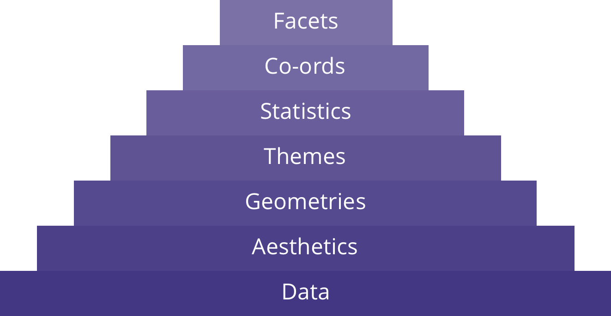

Introduction
Welcome to an Introduction to Data Visualisation in R. This course is designed as a self-led introduction for anyone in Public Health Scotland. Throughout this course there will be quizzes to test your knowledge and opportunities to modify and write R code (building your own visualisations). This course focusses on the use of the package ggplot2 but will introduce some concepts from plotly.
Course Info
- This course is built to flow through sections and build on previous knowledge. If you’re comfortable with a particular section, you can skip it.
- Most sections have multiple parts to them. Navigate the course by using the buttons at the bottom of the screen to Continue or go to the Next Topic.
- The course will also show progress through sections, a green tick will appear on sections you’ve completed, and it will remember your place if you decide to close your browser and come back later.
What is Data Visualisation?
Data visualisation is an essential skill across the spectrum of data science. It is a form of graphical data analysis, which emphasises the accurate representation and interpretation of data. On the other hand, data viz also relies on good design choices, not only to make the outputs attractive but also aiding the understanding of the results.
There are two main types of data viz:
- Exploratory - easily generated, data-heavy, intended for a small specialist audience. This use case here is for graphical data analysis.
- Explanatory - labour intensive, data specific, and intended for a broad audience. This use case could be in publications or presentations.
Ineffective Data Visualisation
Visualising data is an art as much as a science. There are a number of issues to be aware of, including presenting multi-dimensional data, human perception and accessibility, and just generally misleading presentations.
Let’s take these visualisations as an example, what do you think is common across all of them?

Effective Data Visualisation
The previous visualisations are a fun variant on Anscombe’s Quartet, called the The Datasaurus Dozen. The summary statistics are shown below:
The key takeaway should be to model your data, visualise to understand your data attributes. However, there are also other considerations for how plot’s should be:
- Conceptually correct - data is represented visually in a way that makes sense.
- Technically correct - details of the data representation are complete and accurate.
- Aesthetically correct - data is represented in a visually pleasing way.
Foundations
We’re going to use the package ggplot2 for most of this course. So, let’s start by building a plot to see what all of this is about. We can then take the code apart bit by bit to understand what’s going on (and what’s possible). Feel free to adjust the code and see how it affects the output.
library(ggplot2)
borders_data_plot %>%
ggplot(aes(x = ageonadmission,
y = LengthOfStay,
colour = Sex)) +
geom_point(alpha = 0.5) +
theme_minimal() +
ylab("Length of Stay (days)") +
xlab("Age on Admission (years)") +
ggtitle("Length of Stay by Age on Admission")There we have it, in just a few lines of code, we’ve created a plot. You may even have already worked out what some of the code does. We’re now going to take a step back to understand how all of this comes together.
It comes from an underlying grammar of graphics, a framework which follows a layered approach to describe and construct visualisations or graphics in a structured manner. There are 7 grammatical elements:
| Element | Description | Common Options |
|---|---|---|
| Data | The data-set being plotted. | |
| Aesthetics | The scales/axes based on the data dimensions. Any form of encoding, including size, shape, color and so on which are useful for plotting multiple data dimensions. |
x-axis y-axis colour fill size labels alpha shape line-width line-type
|
| Geometries | These are popularly known as ‘geoms’. This would cover the way we would depict the data points on the visualisation. Should it be points, bars, lines and so on. |
point line histogram bar
|
| Themes | The additional, non-data, ink on our outputs. These add value and make things look pretty. | |
| Statistics | Statistical measures in the visualisation like measures of central tendency, spread, confidence intervals. |
binning smoothing descriptive inferential
|
| Coordinates | What kind of a coordinate system should the visualization be based on? |
cartesian fixed polar limits
|
| Facets | Subplots based on specific data dimensions. |
columns rows
|

This shows how the layers of the grammar of graphics build up. It’s also important to know that while data is required, the layers above become more optional (not every plot needs additional statistical measures). The use of these layers will depend on the use of the visualisation, the audience, and even the medium it’s being shared on (i.e., web, pdf, image). You may also see similar representations with slightly different names or ordering.
Using only the first 4 layers (data, aesthetics, geometries, and themes), we’ll be able to create publication-quality plots. The final 3 layers will be explored at a higher level for those who are interested.
Data
This is going to be a short section but important nonetheless. The basis for any visualisation is the data, however it’s rarely useful to look at the numbers and characters that make up a dataset. Some visualisation is required to show relationships.
As mentioned, we’re going to mainly use the ggplot2 package in this course. There are a few reasons for this but it breaks down to being able to create relatively complex and aesthetically pleasing plots using syntax that is intuitive and comparatively easy to remember. However, a requirement for using the package effectively is that the data must be tidy data. This can be summarised as observations in rows and variables as columns. Have a look at the tidyr package to explore how to make data tidy in the Tidyverse.
The dataset used in the last exercise is the borders training dataset and will continue popping up throughout this course. Have a look at its structure below using glimpse() (a tidy-output of str()).
___(borders_data)glimpse(borders_data)Let’s build another plot too. Run the code below and feel free to play around with it. We’ll learn how it all comes together in the next chapters. Just remember we’re using that tidy data as our solid foundation which is piped in as the first argument to ggplot():
borders_data %>%
ggplot(aes(x = spec_1,
y = ageonadmission)) +
geom_boxplot(outlier.colour = "magenta4") +
xlab("Specialty Grouping") +
ylab("Age on Admission (years)") +
ggtitle("Boxplot of Patient Age on Admission by Specialty Grouping")Aesthetics
Aesthetic mappings describe how properties of the data connect with features of the graph, such as distance along an axis, size of points, or colour. Aesthetic mappings are how dimensions of the data are visualised, commonly through the x and y axes, more dimensions could be added by including colour, different types of line or shapes, etc. The aes() function connects data with what we see on the graph by defining aesthetic mappings and will be one of the most often used functions when you’re creating data visualisations.
The aes() function is passed after the data to the ggplot() function. However, it is often used as the first argument of the next layer, a geometry function, (e.g. geom_line()). When passed on the geometry layer, different mappings can be used across different geometries (overlaying a line on a bar chart for instance). We will keep aes() alongside our data inside the ggplot() function which means it’ll be used as the default mapping for all layers of the output.
Let’s look at our first example:
- Our data,
borders_data_plotis piped into theggplot()function. - Aesthetic mappings are added to the
ggplot()function, defining ourxandyvariable mappings. - A 3rd dimension is visualised by mapping colour to another variable.
- The geometry layer (a scatter plot here) is added on (using
+) to create an output.
borders_data_plot %>%
ggplot(aes(x = ageonadmission,
y = LengthOfStay,
colour = Sex)) +
geom_point()Mappings
In addition to the x, y, and colour aesthetics, there are a number of other options. These are dictated somewhat by the choice of geometry used but allow the visuals to be improved and further dimensions to be added to the plot. These are some typical visible aesthetics:
| Aesthetic | Description |
|---|---|
x
|
The x axis position
|
y
|
The y axis position
|
colour
|
Colour of points, outlines of other geoms |
fill
|
The colour of the fill |
size
|
Area or radius of points, thickness of lines |
alpha
|
The level of transparency (out of 1) |
linetype
|
The pattern used for drawing lines (solid, dashed, dotdash, etc.) |
shape
|
The shape of points, some of which allow a fill to be specified
|
labels
|
Text on the plot or axes |
We can use some of these aesthetic mappings to refer to continuous or categorical data. However, some are restricted to categorical. Can you tell which of these pairs would only suit categorical data?
Mappings vs. Attributes
Many of these aesthetics function as both aesthetic mappings but also attributes. This is something to watch out for as it’s a common mistake. To declare an attribute, determining how something looks (e.g. changing the alpha of every point, not mapping to a variable) it should be defined as part of the geom and not in the aes() function.
Let’s take an example. Using the same code as above, change the colour of points to be “dark green” for all points. Use the hint button if you need some guidance.
borders_data_plot %>%
ggplot(aes(x = ageonadmission,
y = LengthOfStay,
colour = Sex)) +
geom_point()borders_data_plot %>%
ggplot(aes(x = ageonadmission,
y = LengthOfStay)) +
geom_point(colour = ___)borders_data_plot %>%
ggplot(aes(x = ageonadmission,
y = LengthOfStay)) +
geom_point(colour = "dark green")Modifying Aesthetics
While we now know how to map data to aesthetics, it may still be necessary to make further modifications. For instance, if there is a lot of overlapping data points, the chosen aesthetic may hide valuable insights. It’s also important to remember that each of the aesthetics is a scale and may need to be fine tuned, like changing the limits of an axis to start at 0. As each of the modifications will impact a particular geometry layer, these modifications are called as part of that layer (i.e. geom_<type>) and not within the aes() function.
Positions
It’s quite common to adjust position, this is how you can account for overlapping data. The default position is “identity” which means that it takes the value exactly as it is in the data to position within the plot. There are a number of other options available though:
| Function | Description |
|---|---|
position_dodge() position_dodge2()
|
Dodge overlapping objects side-to-side, preserving the vertical position. The position_dodge() version requires a grouping in the data, position_dodge2() doesn’t
|
position_identity()
|
No adjustment to position (default) |
position_jitter()
|
A pseudo-randomisation of points to seperate them |
position_jitterdodge()
|
Simultaneously dodge and jitter |
position_nudge()
|
Nudge points a fixed distance |
position_stack()
|
Stacks bars on top of each other |
position_fill()
|
Stacks bars and standardises each stack to have constant height |
These functions are passed to the position argument within a geometry layer function. If we take the first example and add a jitter to the points, it would look like this:
borders_data_plot %>%
ggplot(aes(x = ageonadmission,
y = LengthOfStay,
colour = Sex)) +
geom_point(position = position_jitter())Let’s look at our data set from the first example and compare specialty grouping (spec_1) against LengthOfStay (run the code chunk below to see the plot). We can see that we have a lot of overlapping data points so it’s difficult to really gather any insights from this. Let’s do a few things:
- Add a new dimension to map
Sexto colour. - Apply both jitter and dodge.
- Add an alpha attribute and set the value to ‘0.5’.
borders_data_plot %>%
ggplot(aes(x = spec_1,
y = LengthOfStay)) +
geom_point()borders_data_plot %>%
ggplot(aes(x = spec_1,
y = LengthOfStay,
___ = ___)) +
geom_point()borders_data_plot %>%
ggplot(aes(x = spec_1,
y = LengthOfStay,
colour = Sex)) +
geom_point()borders_data_plot %>%
ggplot(aes(x = spec_1,
y = LengthOfStay,
colour = Sex)) +
geom_point(___ = ___)borders_data_plot %>%
ggplot(aes(x = spec_1,
y = LengthOfStay,
colour = Sex)) +
geom_point(position = position_jitterdodge())borders_data_plot %>%
ggplot(aes(x = spec_1,
y = LengthOfStay,
colour = Sex)) +
geom_point(position = position_jitterdodge(),
___ = ___)borders_data_plot %>%
ggplot(aes(x = spec_1,
y = LengthOfStay,
colour = Sex)) +
geom_point(position = position_jitterdodge(),
alpha = 0.5)Scale
Scales are how aesthetics are set up and control the visual properties of the data values. We can access all the scales with the scale_<name>_<data_type> functions, which is immediately followed by which scale we want to modify. The third part of the function name is to match the type of data (e.g. discrete or continuous). Each of these functions will then have further arguments to alter the appearance of the output. There are also ‘helper’ type functions for common adjustments to labels and limits. The commonly used options are shown below:
| Type | Function | Description | Arguments |
|---|---|---|---|
| Helper |
labs()
|
Modify any label on the plot |
... (for any aesthetic-value pair), title, subtitle, caption, alt
|
xlab() ylab()
|
Modify the label for the x or y axis |
label
|
|
ggtitle()
|
Modify the title and subtitle for the plot |
title subtitle
|
|
lims()
|
Set scale limits |
... (for an aesthetic-value pair)
|
|
xlim() ylim()
|
Set scale limits for the x or y axis |
... (2 numeric values specifying the left/lower and right/upper limits, one value can be left as NA)
|
|
| Axes |
scale_x_continuous() scale_y_continuous()
|
Position of scales for continuous data |
name breaks minor_breaks n.breaks labels limits expand trans position
|
scale_x_discrete() scale_y_discrete()
|
Position of scales for discrete data |
... palette breaks limit drop name labels expand position
|
|
| Colour & Fill |
scale_colour_continuous() scale_fill_continuous()
|
Colour and fill scales for continous data |
... type (one of ‘gradient’, ‘viridis’, or a function that returns a continous colour scale)
|
scale_colour_discrete() scale_fill_discrete()
|
Colour and fill scales for discrete data |
... type (one of a character vector or list of colour codes, or a function that returns a discrete colour/fill scale)
|
|
| Shape |
scale_shape()
|
Mapping no more than 6 discrete variables to shapes |
... palette breaks limits drop na.translate name labels
|
scale_shape_manual()
|
Manually setting the shape mappings from levels in the data to aesthetic values |
... palette limits drop na.translate name labels
|
|
| Line |
scale_linetype_binned()
|
Scale for line patterns/types. Continuous values cannot be mapped to line types unless scale_linetype_binned() is used. As linetypes have no inherent order, this is not advised.
|
... palette breaks limits drop na.translate name labels
|
scale_linetype_discrete()
|
Scale for line patterns/types |
... palette breaks limits drop na.translate name labels
|
|
| Size |
scale_size()
|
Scales for area (commonly used for points and text) |
name breaks labels limits range trans guide
|
scale_radius()
|
Scales for radius |
name breaks labels limits range trans guide
|
To apply these functions, they are added on to the rest of the code with +. So, taking the previous example, we can add an axis name like so:
borders_data_plot %>%
ggplot(aes(x = ageonadmission,
y = LengthOfStay,
colour = Sex)) +
geom_point(position = position_jitter()) +
scale_x_continuous(name = "Age on Admission (Years)")There is so much in that table (and that’s not everything, even the possible arguments has been trimmed down for this) but remember it’s not about remembering how to do everything, it’s just knowing the possibilities. Remember, references are available and you can always use ?<function> in the R console to get the help pages up.
So, let’s put some of this into practice. Here, the data has been filtered to only include data relating to specialty group “H” or “J” and at Hospital Code “B120H”. Let’s tidy up the plot using the scale functions (not the helper functions) we now know about:
- The variable names aren’t easy to read and should be updated. Let’s make the x-axis “Specialty Grouping” and the y-axis “Age on Admission (Years)”.
- It could be said that the visualisation is misleading due to the y-axis limits. Fix this by specifying the lower limit to be 0. This needs a length-2 vector (i.e.
c(x, y)), remember the upper limit. - Let’s also use some PHS colours rather than the defaults. Set “Female” (the first value) to be “#76B843” and “Male” (the second value) to be “#3A3776”.
- Finally, give the plot a title using
ggtitle(). Let’s call it “Boxplot of Age on Admission for Specialty Grouping H & J \n in Borders General Hospital”. (The “\n” is a special character that forces a new line, something that may be necessary in longer titles as ggplot doesn’t automatically wrap the text).
borders_data_plot %>%
filter(HospitalCode == "B120H",
spec_1 %in% c("H", "J")) %>%
ggplot(aes(x = spec_1,
y = ageonadmission,
colour = Sex)) +
geom_boxplot()borders_data_plot %>%
filter(HospitalCode == "B120H",
spec_1 %in% c("H", "J")) %>%
ggplot(aes(x = spec_1,
y = ageonadmission,
colour = Sex)) +
geom_boxplot() +
___(___ = ___) +
___(___ = ___)borders_data_plot %>%
filter(HospitalCode == "B120H",
spec_1 %in% c("H", "J")) %>%
ggplot(aes(x = spec_1,
y = ageonadmission,
colour = Sex)) +
geom_boxplot() +
scale_x_discrete(name = "Specialty Grouping") +
scale_y_continuous(name = "Age on Admission (Years)")borders_data_plot %>%
filter(HospitalCode == "B120H",
spec_1 %in% c("H", "J")) %>%
ggplot(aes(x = spec_1,
y = ageonadmission,
colour = Sex)) +
geom_boxplot() +
scale_x_discrete(name = "Specialty Grouping") +
scale_y_continuous(name = "Age on Admission (Years)", ___ = c(___, ___))borders_data_plot %>%
filter(HospitalCode == "B120H",
spec_1 %in% c("H", "J")) %>%
ggplot(aes(x = spec_1,
y = ageonadmission,
colour = Sex)) +
geom_boxplot() +
scale_x_discrete(name = "Specialty Grouping") +
scale_y_continuous(name = "Age on Admission (Years)", limits = c(0, NA))borders_data_plot %>%
filter(HospitalCode == "B120H",
spec_1 %in% c("H", "J")) %>%
ggplot(aes(x = spec_1,
y = ageonadmission,
colour = Sex)) +
geom_boxplot() +
scale_x_discrete(name = "Specialty Grouping") +
scale_y_continuous(name = "Age on Admission (Years)", limits = c(0, NA)) +
___(___ = c(___, ___))borders_data_plot %>%
filter(HospitalCode == "B120H",
spec_1 %in% c("H", "J")) %>%
ggplot(aes(x = spec_1,
y = ageonadmission,
colour = Sex)) +
geom_boxplot() +
scale_x_discrete(name = "Specialty Grouping") +
scale_y_continuous(name = "Age on Admission (Years)", limits = c(0, NA)) +
scale_colour_discrete(___ = c(___, ___))borders_data_plot %>%
filter(HospitalCode == "B120H",
spec_1 %in% c("H", "J")) %>%
ggplot(aes(x = spec_1,
y = ageonadmission,
colour = Sex)) +
geom_boxplot() +
scale_x_discrete(name = "Specialty Grouping") +
scale_y_continuous(name = "Age on Admission (Years)", limits = c(0, NA)) +
scale_colour_discrete(type = c("#76B843", "#3A3776"))borders_data_plot %>%
filter(HospitalCode == "B120H",
spec_1 %in% c("H", "J")) %>%
ggplot(aes(x = spec_1,
y = ageonadmission,
colour = Sex)) +
geom_boxplot() +
scale_x_discrete(name = "Specialty Grouping") +
scale_y_continuous(name = "Age on Admission (Years)", limits = c(0, NA)) +
scale_colour_discrete(type = c("#76B843", "#3A3776")) +
___(___)borders_data_plot %>%
filter(HospitalCode == "B120H",
spec_1 %in% c("H", "J")) %>%
ggplot(aes(x = spec_1,
y = ageonadmission,
colour = Sex)) +
geom_boxplot() +
scale_x_discrete(name = "Specialty Grouping") +
scale_y_continuous(name = "Age on Admission (Years)", limits = c(0, NA)) +
scale_colour_discrete(type = c("#76B843", "#3A3776")) +
ggtitle("Boxplot of Age on Admission for Specialty Grouping H & J \n in Borders General Hospital")Final Thoughts & Best Practice
While there is a certain amount of creative know-how, it’s also important to follow guidance that has been created. This will help form the most suitable presentation of data that is accessible, aligns with outputs produced across the organisation, and meets the needs and expectations of your audience.
Forms follows function - the best visualisations serve a purpose. This depends on your audience; you may be confirming your own suspicions, starting to analyse the data you have, or you may be trying to inform a lay reader of specific results. The priority is to always generate accurate and efficient representations of the data, otherwise it’s rubbish. After that, we can be concerned about creating something that is visually interesting and appealing.
Guiding Principles
- Always consider the audience and purpose of every visualisation
- Always be accurate and efficient
- Never misrepresent or obscure data
- Never confuse viewers with complexity
Knowledge Check
Geometry
The 3rd (essential) layer is the geometry (geom) layer. We’ve already seen this in action throughout our previous examples so you may have worked out what it does and how to use it. However, this is where we determine what type of plot it’s going to be. There are about 50 options to chose from, but as you can probably imagine, you’re much more likely to use a select few:
| Group | Function | Description |
|---|---|---|
| Scatter |
geom_point()
|
This is the foundation for the next 2 variations. Scatterplots are the most useful for displaying the relationship between 2 continuous variables. You can map another variable to size which will create a bubble chart from this.
|
geom_jitter()
|
A convenient shortcut for specifying jitter as the position. Adding a small amount of random variation to the location of points, useful for handling overplotting. | |
geom_count()
|
Counting the number of observations at each location. | |
| Bar |
geom_histogram()
|
A specialised version of bar plots. Showing the binned distribution of a continuous variable. |
geom_bar()
|
A bar with the height proportional to the number of cases in each group. | |
geom_col()
|
A bar with the height representing values in the data. | |
| Line |
geom_line()
|
Connect observations based on the order on the x-axis. |
geom_path()
|
Connect observations based on the order which they appear in the data. | |
| Other |
geom_smooth()
|
Aiding in the visualisation of patterns where overplotting is an issue. |
With the layered approach, we can add multiple geoms to the same plot, just like another layer. If we remember back to the section on aesthetics, we can define the mappings within the geom layer which will allow us to use different data mappings for each geom. We’ll continue with defining aes() as part of the ggplot() call though. Let’s see what 2 geoms will allow us to do:
ggplot(data = mpg, mapping = aes(x = displ, y = hwy)) +
geom_point(position = position_jitter(), alpha = 0.5) +
geom_smooth(colour = "#76B843")
Scatter Plots
Scatter plots have been quite common throughout this course so far. That’s because they’re generally useful, particularly in the exploratory side of data visualisation.
Let’s have a look at another scatter plot. This time there will be an obvious (albeit predictable) split in the data. Let’s pull knowledge from the previous sections and create the full block of code. Don’t worry, you’ll still have guided steps and hints to help.
The data we’re looking at has been filtered for you. We’re looking at Specialties “AM” (Palliative Medicine) and “AF” (Paediatrics). We’re going to create a scatter plot to see how age (on admission) impacts length of stay. Have a think about how you would expect this plot to look and then follow the steps below to see if you were right:
- Set up the
ggplot()function and add the aesthetic mappings (“ageonadmission” and “LengthOfStay”). - Add a 3rd dimension to visualise “Specialty” with colour.
- Make it a scatter plot with a jitter modification using the
positionargument. - Rename the legend labels to “Palliative” and “Paediatrics”. (Hint: they’re discrete and mapped to colour, think about the order you write them too.)
- Change the axis labels to “Age” and “Length of Stay”, you can use the helper functions for this.
borders_data_plot %>%
filter(Specialty %in% c("AM", "AF"))borders_data_plot %>%
filter(Specialty %in% c("AM", "AF")) %>%
ggplot(aes(x = ageonadmission, y = LengthOfStay, colour = Specialty)) +
geom_point(position = position_jitter()) +
scale_colour_discrete(labels = c("Paediatrics", "Palliative")) +
xlab("Age") +
ylab("Length of Stay")Histograms
Visualising the distribution of a single continuous variable by dividing the axis into bins and counting the number of observations in each bin. Let’s create a histogram now:
- Set up the
ggplot()function and add the aesthetic mappings (“ageonadmission”). - Add a 3rd dimension to visualise “Sex” with fill (colour would be an outline rather than fill the space).
- Make it a histogram plot. If we look at this, we should note that bars are automatically stacked but this isn’t obvious. Change the position to dodge.
- We’ll also see the automatic message about bin width. We could probably make this clearer by setting bin width to 10.
- Change the axis labels to “Age” and “Count”, you can use the helper functions for this.
borders_data_plot %>%
filter(Specialty %in% c("AM", "AF"))borders_data_plot %>%
ggplot(aes(x = ageonadmission, fill = Sex)) +
geom_histogram(binwidth = 10,
position = position_dodge()) +
xlab("Age") +
ylab("Count")Line Graph
Connecting observations in order of the variable on the x-axis, line graphs are used particularly in time trends. So let’s mix it up by using a new data set for this section and see how childhood immunisation uptake has varied over a number of years.
- Set up the
ggplot()function and add the aesthetic mappings (“year” and “measure”). - Add a 3rd dimension to visualise the immunisation with colour.
- Make it a line graph.
- Immediately, we can notice what looks to a big difference in uptake between the immunisations. However, if we look at the limits on the y-axis, this could mislead us. So, let’s change the limits. We want it to start at 0 but what would the upper limit be? While we’re at it, let’s change the name so it shows “Uptake (%)”.
- The x-axis only has tick labels for a few years but we have 14 in our data. The function has tried to minimise clutter but let’s show 7 breaks which will be easier for to read. We can also update the name at the same time, call the x-axis “Year”.
- Finally, the legend’s title is lower case and doesn’t look very presentable. Let’s make it proper case (hint: the lenend is describing a discrete colour object).
sp_child_immunisations_datasp_child_immunisations_data %>%
ggplot(aes(x = year, y = measure, colour = immunisation)) +
geom_line() +
scale_y_continuous(name = "Uptake (%)", limits = c(0, 100)) +
scale_x_continuous(name = "Year", n.breaks = 7) +
scale_colour_discrete(name = "Immunisation")Themes
Stuff about themes
Interactivity
Introduction to Plotly